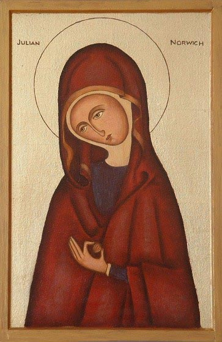

Little is known about the life of Julian other than what she reveals in her own writing. It is not even known if Julian was her real name or whether she was named for the Church of St. Julian's in Norwich, where she lived as an anchoress in the latter part of her life.
It is assumed that she was born in Norwich, England. According to her writing she was born in 1342.
In May of 1373, she became sick with a serious illness and on May 13 was on her deathbed. The local priest was summoned to deliver the last rites. As the priest held a crucifix before her, Julian entered into a series of sixteen mystic visions (or "showings" as she called them). These visions became the basis for her book Revelations of Divine Love. Not only did Revelations have a strong impact on Christian spirituality and mysticism, it is also the first published book in the English language written by a woman.
Julian spent the rest of her life as an anchoress, living in a cell attached to the Church of St. Julian where she devoted time to prayer, writing and was known for her listening ear and good advice. She died some time around 1416.
And in this he showed me a little thing, the quantity of a hazel nut, lying in the palm of my hand, as it seemed. And it was as round as any ball. I looked upon it with the eye of my understanding, and thought, ‘What may this be?’ And it was answered generally thus, ‘It is all that is made.’ I marveled how it might last, for I thought it might suddenly have fallen to nothing for littleness. And I was answered in my understanding: It lasts and ever shall, for God loves it. And so have all things their beginning by the love of God.
Our Savior is our true Mother in whom we are endlessly born and out of whom we shall never come.
Truth sees God, and wisdom contemplates God, and from these two comes a third, a holy and wonderful delight in God, who is love.
If there is anywhere on earth a lover of God who is always kept safe, I know nothing of it, for it was not shown to me. But this was shown: that in falling and rising again we are always kept in that same precious love.”